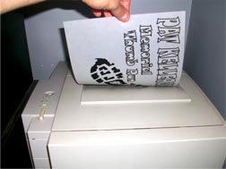
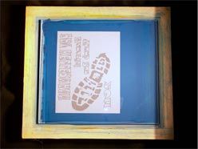
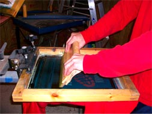
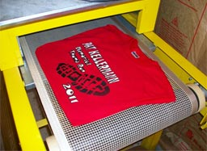

Welcome to K-O Apparel! We hope you like our new website. Plenty of hard work went into this site and we are very proud of the results. We hope it will ultimately provide increased convenience for our customers along with helping them get to know our company just a little better.
- seth@k-oapparel.com
- 989-576-1267
- 309 Heisterman St.
- Bad Axe, MI 48413
K-O Apparel is a custom screen printing company located in Bad Axe, MI. We offer screen printing on just about anything you want printed on including t-shirts, sweatshirts, polos, jerseys, sweatpants, shorts and tote bags. We’ll print shirts for your school, business, sports team, church, club, organization or anything else you’re affiliated with. Not affiliated with anything? We’ll print stuff for you anyway and do it with a smile on our face at no additional charge!
So how, you ask, did the legend of K-O Apparel begin? To answer that let us take you back to the year 1998 when a fresh-faced college kid wandered into screen printing and embroidery shop called Alley T looking for a job for the summer because he didn’t want to work in a hot factory like he had the previous summer. Somehow that young punk got hired, and despite sweating his butt off all summer anyway working next to a big, hot conveyor dryer, Seth Stapleton fell in love with the screen printing process and was hooked for good.
Throughout college Seth worked part-time at Alley T, learning the screen printing process from beginning to end. He even showed his creative side, producing an infamous line of trash-talking basketball shirts that he sold around campus out of the trunk of his car. For a look at his best seller, click here.
{kind=link}
After college, and then graduate school, and then sports writing, and then finding true love; Seth wound up in Bad Axe, MI with a hot wife, a kid, a job and the satisfaction of finally having grown up….for the most part anyway. But despite all the changes, one constant he could not ignore was his desire to start his own screen printing business; so on a beautiful spring day in March 2007, Seth purchased a slightly-used 6-color screen printing press and the rest is history.
So in a shop out behind his home dubbed the Knock-Out Shed, Seth has been knocking out shirts for Bad Axe, Huron County and beyond for several years and enjoying the journey along the way. But the best part, he believes, is that the journey has really just begun—the legend of K-O Apparel will continue to be shaped in the years to come.
Thank you for taking the time to learn about us and thank you for considering K-O Apparel for your custom screen printing needs.

Please fill out the questions below so we can better serve you. If you would prefer to give us a call for your quote, please try to provide as much of the information below so we can make the process as quick and easy as possible.
Order Information
How many garments are you looking to get printed?
What type of garment do you want? Be as specific as possible.

What color(s) do you want the garment to be?
How large do you want the front design (if any)?
How large do you want the back design (if any)?
Do you want to print anywhere else (sleeve, bottom of shirt)?
Any other special information you need us to know (atypical placement, special ink, etc.)?
We will help you as much as you need through your entire order….from the idea stage to the final product and everything in between. We’re not sure how much joy one can derive from placing a custom screen printing order, but it is our goal to provide you with the most enjoyable custom screen printing ordering process possible.

{kind=link}
{kind=link}
Green Acre Landscaping – Two color design (white and black ink) printed on kelly green t-shirts and sweatshirts.
{kind=link}
Bad Axe Hatchet Festival – Two color design (navy blue and yellow ink) printed on lime green t-shirts.
{kind=link}
Hatchet Hysteria – Three color design (yellow, green and orange ink) printed on navy blue t-shirts, long sleeve shirts and sweatshirts.
{kind=link}
{kind=link}
{kind=link}
{kind=link}
These are some of our favorite suppliers we like to offer our customers. To browse through everything on their website, click on the supplier links below:
- SanMar: www.sanmar.com
- S&S Activewear: www.ssactivewear.com
- One Stop: www.onestopinc.com
- Broder: www.broderbros.com
- Rothco: www.rothco.com
- Badger Sportswear: www.badgersport.com

The Process
Many customers ask us how exactly a shirt is screen printed, so we thought we’d give you a brief overview of the screen printing process in order to help show the time and care that is taken into each screen printing job. The following steps will give you a better understanding of the process:
Step 1: Artwork
The customer will either provide their artwork or will work with us to come up with a design for them. Once a design is completed a proof is shown to the customer. A proof is what your design will look like on the garment and will show the ink colors to be used, the print size dimensions for the artwork and confirm the customer’s desired print locations. After the proof is approved by the customer, we print off the design and get ready to expose it to the screen.
Step 2: Screen Preparation
The mesh fabric of the screen is coated with photosensitive emulsion and the artwork is transferred to it by exposing it to ultra-violet light. The artwork is then developed on the screen by pressure washing it with water.
Step 3: Printing
Each color in the design requires a screen and each screen must be taped off and set-up in order to register properly on the garment. Next, each color is laid down on the garment with a squeegee that presses the ink through the mesh one color at a time and cured with a flash heater after each color. Finally, when the design is complete, the shirt is run through a conveyor dryer to cure the ink completely.
Step 4: The Finished Garment
Once run through the conveyor dryer and cured at the correct temperature, the garment is finished and ready to present to the customer!
Screen printing is the most common and economical method for t-shirt or garment printing. The process will create a design that will have long-lasting durability and color that can be placed pretty much anywhere on a garment. It is a method that is used to print quality garments in bulk quantities. If you have any other questions about the process, please feel free to contact us.
Here are some of the more common questions we get asked. Hopefully in reading these you will find the answer you are looking for but if not, please don’t hesitate to contact us.
General Questions:
- Do you print on customer provided shirts? Can I bring in my own garments?
Short answer: Yes. Long answer: We would prefer NOT TO. We often need extra garments to test print on and there is also a slight chance of a printing error. When we print on garments that we supply, it is easily fixed because we have more in stock. So yes, we will most often print on customer provided garments; but only with the customer’s understanding that if we do happen to mess one up we will feel really bad, it will probably not be able to be replaced and the customer will not be reimbursed for their loss. - What is your turn around time?
We ask for two weeks to get an order completed but finish in less than that many times, depending on how many scheduled jobs we have going at the time. - Do you have rush service?
If you need your order faster than two weeks, we can usually accommodate this. However, if we are extremely busy and we have to move scheduled jobs around to fit your order in, we may have to charge you a rush fee. For orders less than one week, a fee of 25% of the total order will be added. - Where are you located?
K-O Apparel operates out of the “Knock-Out Shed” located behind our beautiful residence in Bad Axe, MI. - Do you actually print the t-shirts at your shop?
Absolutely! That’s why we got into this business. There’s nothing like pulling a freshly-cured shirt off the conveyor dryer knowing all the blood, sweat and tears that went into making it. Rest assured though; we will not actually get ANY blood, sweat or tears on your shirt. - How can we contact you?
By telepathy, but usually that doesn’t work so if I were you I’d do it by clicking here. - Where did the name “K-O Apparel” come from?
Funny you should ask. Once upon a time, K-O Apparel owner Seth Stapleton was in high school, in love with his basketball and had absolutely no idea whatsoever how to talk to girls. As legend has it, instead of actually attempting to talk to girls to alleviate this problem, he would sit around and accomplish nothing by coming up with names for the hot ones with his other socially-awkward friends. One hot girl in particular caught Seth’s eye: a young vixen by the name of Kelly O’Boyle. One day, upon passing by her in the hall and strutting by with his nose in the air because he was too much of a pansy to say “hi,” Seth thought to himself “my gosh is that girl a knock-out!....plus her initials are K.O....I think you’re on to something here Seth!” And thus forevermore the hot girl named Kelly O’Boyle would now be referred to as Knock-Out amongst Seth’s moronic circle of friends. After never actually talking to Knock-Out—ever—let’s fast forward eight years into the future at a MSU vs. Western Michigan tailgate and picture a confident stud of a man in his mid-20’s with a few drinks in him. Now picture him not being such a pansy and actually talking to Knock-Out, working his magic and getting her digits. After that, game over. The two fell in love, Seth started his business and it took him about two seconds to come up with the name that combined his two lifelong dreams: K-O Apparel.
Screen Printing Questions:
- What is your minimum order for screen printing?
While we would prefer an order of 12 or more of the SAME design, we will always try to accommodate nearly any request. Just remember, the smaller the order, the more it is going to be price-wise per shirt because it costs us just as much to cut a screen for a five shirt job as it does to cut a screen for a 500 shirt job. - What is your maximum print area?
Our largest area we can print up to is about 14 inches wide by 16 inches tall. - Can you provide me with a free quote?
We’d love to. Please go to our Quotes page and we’ll help you take care of that request. - Do you do sample shirts?
No. We will provide you with a proof of what your garment will look like but we do not offer sample shirts. - What is a proof?
A proof is a way of ensuring that we have designed your job accurately and that everything is positioned according to your requirements. Typically, we will produce a proof which will be sent to you via email. Your approval on the final proof is assurance that you have looked over every aspect of our work and approve it as accurate. It benefits everyone if errors are caught in the proofing process rather than after the job is completed and delivered. - Do you provide a proof?
Yes. Customers are ultimately responsible for insuring their artwork is correct prior to order production. When customers submit their own artwork for an order the artwork will be considered to have been proofed once submitted to K-O Apparel. If artwork submitted is still in draft form, the customer must make K-O Apparel aware that the art provided is not the final artwork for the order, and the order will go on hold until final artwork is approved. - If K-O Apparel creates the artwork for the customer the customer will have an opportunity to proof the art prior to production. Customers should carefully review their graphics and should pay particular attention to spelling if your graphic incorporates words. If printed colors are critical to your project we recommend that customers get with us to verify the colors before the printing process takes place.
- Once the customer has approved the artwork, K-O Apparel will not be held responsible should the order be completed and later found to have errors due to spelling or other issues when the final product's graphic matches the customer approved art.
Embroidery Questions:
- Do you offer embroidery?
Yes, however at this time we do not do our embroidery in-house. Until we get our own embroidery machine, we have a wonderful business partner that handles our embroidery orders. For embroidery pricing, please contact us.
Apparel Questions:
- What type of apparel can we choose from to have you screen print or embroider on?
Great question. We deal with several companies listed here but if you have anything else in mind, I’m sure we can probably get it, so please contact us.
Payment Questions:
- What payments do you accept?
We accept cash, check and paypal. - When do you expect payment?
Yesterday! No, just kidding. Most companies request a 50% deposit before the order is started and the other 50% after it is completed. We would prefer to just trust people, so we expect payment when we present you with your order. We hope that works for you. - Do you offer any discounts?
We try to keep our prices as low as possible, although we do offer the occasional special right here so keep checking back with us.
Delivery Questions:
- Do you deliver?
The most cost-effective way we can get your order to you we will try. We have shipped orders, we have hand delivered orders a few blocks away, we have delivered orders halfway across the state (although we were heading in that direction anyway) and many times we have had orders picked up by the customer right at the Knout-Out Shed itself. Whatever your need, we can figure something out. - What kind of files do you accept?
We do our artwork in Corel Draw, which is a vector based program, not that you care. What you do care about is how to get your artwork to us in the best possible manner. Here's the file types we accept via email: .cdr, .ai, .eps, high-resolution .jpg and .tiff.
Artwork and Design Questions:
Call us @ 989-576-1267
Call anytime and leave a message and we’ll return your call ASAP.
Email: seth@k-oapparel.com
We check our inbox regularly and return emails promptly.
We are located in Bad Axe, MI
Pick-ups are available by appointment.